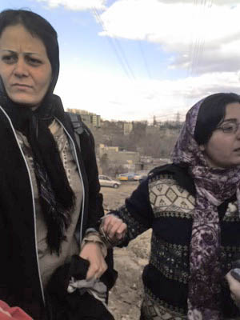

|
|
|
Browsing
Contact Us |
Campaigners |
Face to Face |
Tribune |
Interview |
News |
On the Web |
One Million |
Report
Farsi | Français | German | Italian | Spanish | العربية Also in this section
|

Update on Imprisoned Women’s Human Rights Defenders New Strategies for Harassment and Intimidation of Women’s Rights DefendersThursday 5 April 2007 On Wednesday evening Mahboubeh Hossein Zadeh and Nahid Keshavarz contacted their families by telephone, from Evin Prison where they have been held since Monday April 2 nd. These women informed their family members that they have been moved to a new ward within Evin prison. In a phone conversation with her husband, Nahid Keshavarz explained that she and Mahboubeh Hossein Zadeh had spent the previous day in special ward within Evin Prison which is infamously referred to as the "punishment ward." "This is where women are sent when their judges want to teach them a lesson" explained Mahboubeh Hossein Zadeh. According to reports from Nahid and Mahboubeh this ward houses hard criminals and women with severe psychological and emotional problems. Extreme violence and fighting among inmates is prevalent and many of these inmates repeatedly beat and cut themselves.
 The conditions in this ward were so poor that according to Nahid Keshavarz, Mahboubeh Hossein Zadeh spent the entire time crying in sympathy for the female inmates. Nahid went on to explain that "this is place is the end of the earth. In this ward I saw women and girls whose arms and wrists were marked with cuts, testifying to repeated attempts at suicide. I realize now more than ever that our laws need to be reformed and we need to continue with our cause." In their first day and half in prison these women human rights defenders were denied basic necessities, such as soap, or even bread and tea. The food they explained was not edible. The women also explained that the conditions in this ward were so bad that they felt that their security and life was in danger. In their telephone conversations Mahboubeh and Nahid explained that they were moved to Ward 3 in Evin Prison on Wednesday night, where they have better conditions than the previous night. "For the first time in three days we were able to drink tea" they explained. Ward 3 is home to female inmates accused of sexual crimes. "Many of the women sentenced to death or stoning, like Ashraf Kalhor, whose cases have been taken up by the women’s movement, reside in Ward 3," explained Mahboubeh Hossein Zadeh. According to Shirin Ebadi, who is representing these women, "the treatment of these women human rights defenders is not inline with prison regulations. If anything, these women are facing social charges and they should not be imprisoned in the same ward as hardened criminals. Even if according to the prosecutor’s office these women’s rights activists are facing national security charges, then why are they being held in the same ward as criminals and denied basic sanitary and nutritional necessities?" Earlier on Wednesday, Shirin Ebadi and Nasrin Sotoodeh, also representing the two women, went to the Revolutionary Courts to follow up on the cases of their clients. "We were denied entry into the court. No one is accountable here. It seems that we should expect all sorts of illegal actions by courts and officials, when even lawyers are denied entry into the court and information about their clients," explained the Nobel Peace Prize winner, Ms. Ebadi. Ebadi went on to explain that "no crime has taken place here. Collection of signatures cannot be viewed as actions against national security. These arrests are illegal. Unfortunately Security Officials continually claim that all cases are a matter of national security, but is it really a matter of national security when a women does not agree with polygamy or does not want her husband to take on a second wife? Does a protest against laws allowing for polygamy truly endanger national security?" While the lawyers were denied entry to the courts and answers to their questions, the families of the imprisoned activists were told by court officials that preliminary investigations into these cases are not yet complete and asked to come back for follow-up next week. Prior to being taken to Evin prison, both Nahid and Mahboubeh were presented with documents that set their bail at a third party guarantee of 20 million tomans (roughly 20,000 euro), indicating that they were scheduled to be released. These two women were arrested with three others on April 2, 2007 while collecting signatures in support of the One Million Signatures Campaign which aims to end legal discrimination against women. The others were released on Tuesday April 3 on personal guarantees, but Ms. Hossein Zadeh and Keshavarz were taken to Evin prison. It is believed that these two women are being punished because they refused to sign a statement agreeing to end their activities in the Campaign and on behalf of women. |